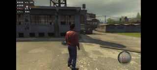
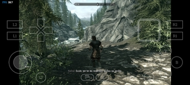
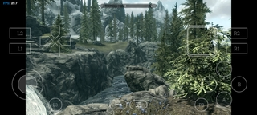
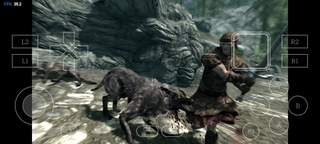

- Desempenho:20-30 FPS
- Configurações: Gráficos baixos, resolução 1280p (para configuração completa ver videos do youtube)
- Observações: Jogável, mas com quedas de FPS em momentos de muita renderização. 
- Skyrim (rpg de ação)
- Desempenho:30 FPS
- Configurações: Gráficos baixos, resolução 1280p (para configuração completa ver videos do youtube)
- Observações: Jogável, mas com quedas de FPS em momentos de muita renderização.   
Skyrim

Alguns jogos simplesmente não irão funcionar pela limitaçao do celular, jogos mais antigos e até recentes podem não funiconar se você não tiver um celular potente o suficiente.
(O link de site para abaixar os jogos nao sabemos se é seguro entre por sua conta e risco)Link
Voltar